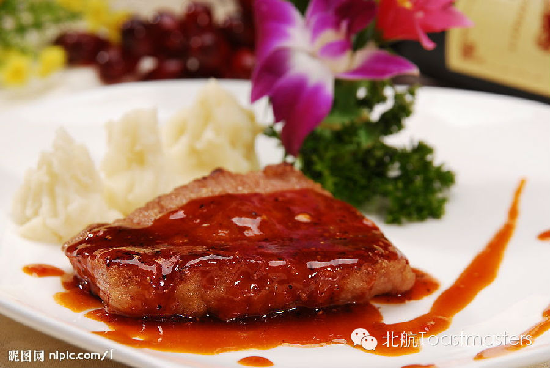
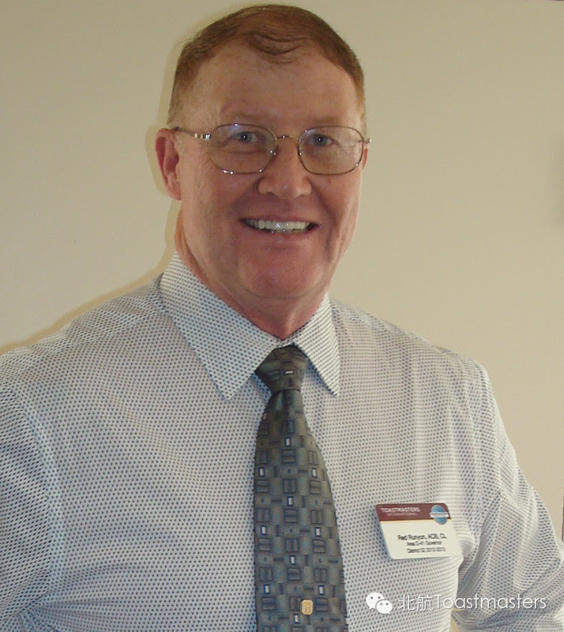

Welcome Letter for 60th Beihang Toastmasters Club Meeting
FOOD
Time: Friday May.23 19:30-21:30
Venue: Room A212, New Main Building, Beihang University

Toastmaster: Peter
Table Topic Master: Keven
There are all kinds of people around the
world. We live on different continents, we have different appearances,
and we use different languages. However, there is one thing that we all
share: we must eat for the continuation of our lives. In this meeting,
our experienced member Keven will lead us to share our stories and
opinions on food. Foodies, come on! The stage is right there for you!
Sharing From Honorable Guest

The Greatest Adventure
Mr. Red Runyon DTM
If you have been to our club recently, you must be familiar with Mr. Runyon. He is a retired CEO from Los Angeles. At the same time, he is also a Distinguished Toastmaster, having finished all the projects in only 18 month. Mr. Runyon`s experience is unbelievable: he enjoys motorcycle racing, mountain climbing, scuba diving, bungee jumping, sky diving and travelling. So far, he has visited about 70 countries. I really admire his life and his attitudes towards life. This time, we`ll have the honor to invite Mr. Runyon to share his personal story! Guys, I know you won`t miss it!
====分=====割=====线====
老朋友：点击右上角按钮分享到朋友圈
新朋友：点击标题下方的【北航Toastmasters】关注我们查看历史消息
北航Toastmasters专注于提升演讲能力和领导能力。这是一个增强自信、促进个人成长的舞台。
每周五19:30在北航新主楼A212举办meeting.
我们欢迎每一个感兴趣的朋友前来做客!
路线：回复r即可查看路线地图